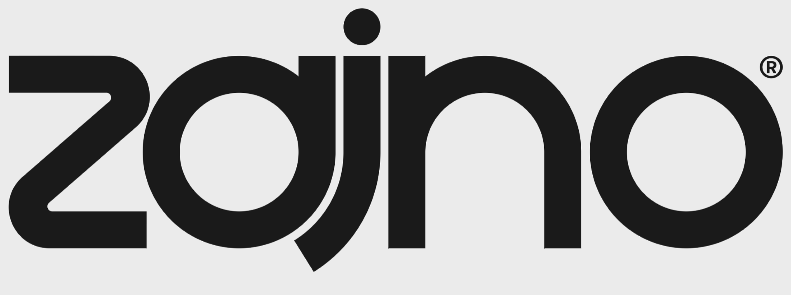

Watch Showreel

Work
At Zajno, we know your time is precious, and that’s why we prioritize simplicity and efficiency. Our team has the expertise and creativity to handle everything from research and planning to custom design and development, freeing you from the burden of micromanagement.
2015-24
01
Design & Development
Branding
UI/UX

01
Design & Development
Branding
UI/UX
Studio
We're a digital design studio that's all about breaking the mold! We don't do boring websites or ordinary apps - we specialize in crafting the wildest, most unconventional digital experiences out there.